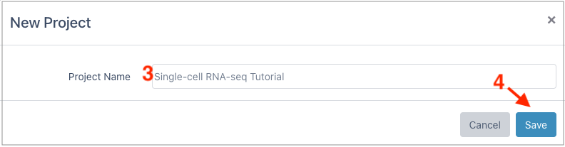
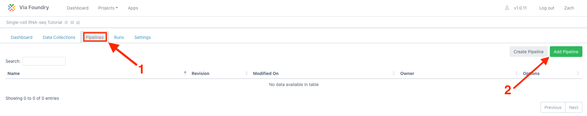
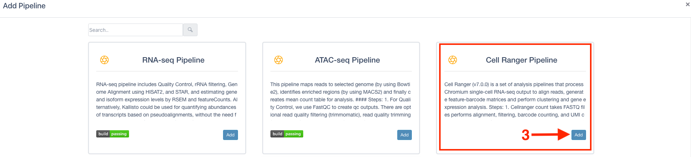
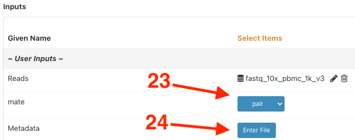
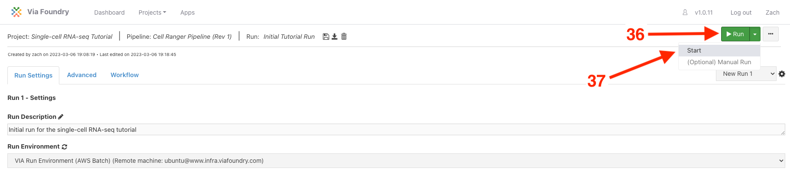
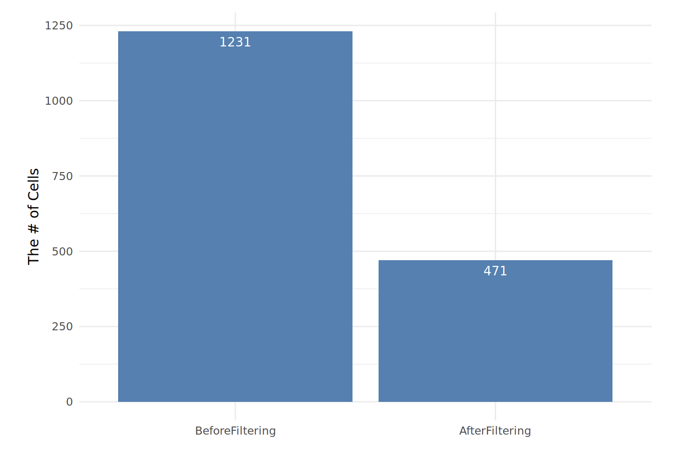
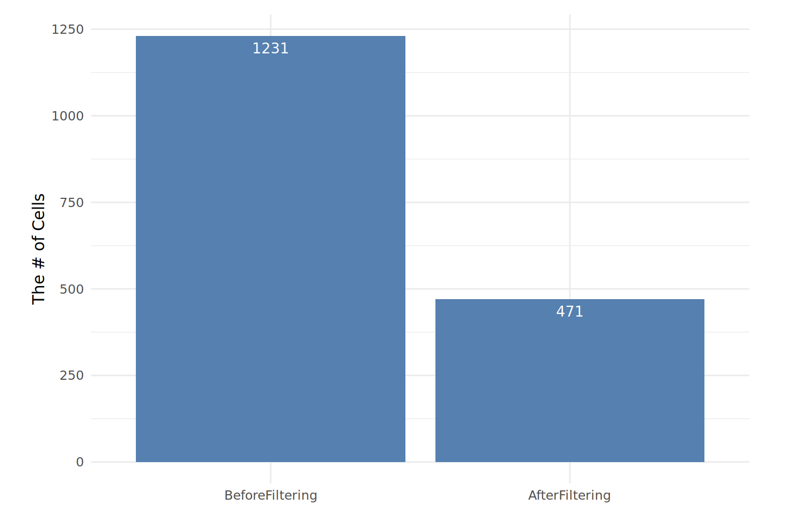
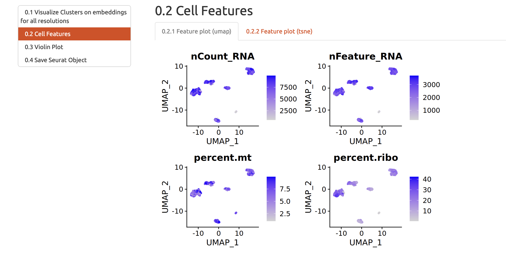
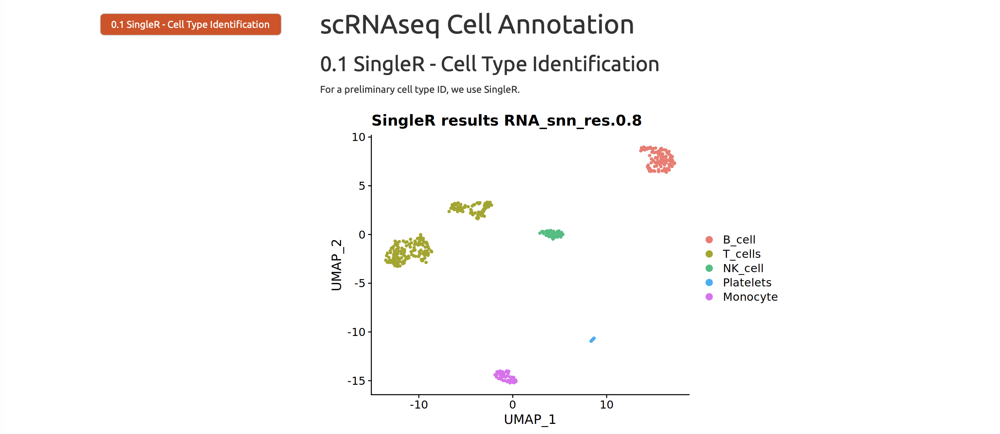

Running Cellranger Pipeline
Expected learning outcome
To understand the basics of Foundry and run a single-cell RNA-Seq pipeline with sample data.
Before you start
Please go to https://www.viafoundry.com and log in to your account. If you have any issues with logging in, please let us know (support@viascientific.com). We will set-up an account for you.
Creating a Project
Once logged in, (1) click on the Projects drop down on the top menu. This is the place to configure your projects.
To create a new project, (2) select Add a New Project.
In the New Project pop-up, (3) give the new project a name and (4) click save.

Creating a Run
Once a project is created, to access pipelines (1) click the Pipelines tab and then (2) click Add Pipeline in the top right.

In the Add pipeline window, (3) click the Add button for the "Cell Ranger Pipeline" and close the window (bottom right).

To bring up the run page, (4) click the Run button of the Cell Ranger pipeline on the table.

[Optional] To provide a run name, (5) click inside the box next to Run. Provide a new name and click anywhere outside the box to exit.
[Optional] To provide a run description, (6) click the pencil next to Run Description. Provide a description and (7) click on the checkbox to finish editing.
Under Run Environment, (8) select "Via Run Environment (AWS Batch)"

To add the source data, under User Inputs next to Reads (9) click Enter File

In the Select/Add Input File window, (10) select the Files tab and then (11) click + Add File

Here if you need to upload your files to AWS S3, please check out the file upload video below:
In the Add File window, (12) select the Remote Files tab and in the 1. File Location box (13) paste the following path:
s3://viafoundry/run_data/test_data/fastq_10x_pbmc_1k_v3
The Amazon Keys for S3 box should appear. The Amazon Keys for S3 should automatically set itself to "Via Scientific AWS Key". If you prefer to use another AWS Key for another s3 bucket, please change "Amazon Keys for S3" dropdown option.
Click (14) search button to see the content of the s3 directory. Leave 2. File Type as "FASTQ" and in the 3. Collection Type dropdown, (15) select 'Paired List'.

Under 4. File Pattern, check that R1 Pattern is set to _R1 and similarly that the R2 Pattern is set to _R2. For this sample, there were two sequencing lanes run (L001 and L002). To merge the two lanes, (16) hold shift while clicking on pbmc_1k_v3_S1_L001_R1_001.fastq.gz and (17) pbmc_1k_v3_S1_L002_R1_001.fastq.gz. The corresponding R2 will be automatically selected. (18) Click "Merge Selected Files" to combine the two lanes.
Tip
- For other datasets, if you don't need to merge samples, you can select the samples you want to add and click
Add Selected Filesbutton. - If you prefer to add all files that match the pattern, you can click
Add All Filesbutton.
(19) Update the 'Name' to pmbc_1k_v3_S1. And input fastq_10x_pbmc_1k_v3 as the 5. Collection Name. The final three boxes can be left blank. (21) Click "Save Files".

This will return to the Change Input File window. (22) Click "Save" again.

Since this sample has paired end reads, (23) ensure the mate dropdown is set to "pair". To finish the Metadata section (24) click "Enter File".

Metadata can be entered in three ways: Via a path to a file in the cloud, dropping a local file into the box, or in simple cases directly in the table. Notice the sample name is pulled in from the sample selection. To finish the table (25) fill in the "Condition" column with pmbc_1k_v3 and (26) click "Save".

Pick the genome by (27) selecting "human_hg38_gencode_v32_cellranger_v6" in the genome_build dropdown.
Optional: Adding custom genome sequence to selected genome_build
If you prefer to add custom genome sequence to selected genome_build, enable three inputs:
-
set
run_mkrefto "Yes" (28) -
set
add_sequences_to_referenceto "Yes" (29) -
set
run_Download_Genomic Sourcesto "Yes" (30)
Warning
This change will add approx. 1 hour to run time since it will build new indexes with entered custom sequences. If you select no to these inputs it will use prebuilt indexes.
To supply the new sequences (31) click the wrench in the add_sequences_to_reference section.
In the Process Settings window (32) click "Enter File"
In the Enter File window (33) you can drag and drop your local genome file or enter a s3 path into File Location:
s3://viafoundry/run_data/test_data/fasta_EGFP/EGFP.fa
and (34) click "Save" to return to the Process Settings window.
(35) Click "OK" to submit the changes.
In conclusion, all settings should be set to "yes", except run_Aggregate_Libraries and genome_build which was set to "human_hg38_gencode_v32_cellranger_v6".
Finally, to submit the run (36) click "Run" in the top right and (37) select "Start"

Analyzing Reports
- RNA-Seq pipeline runs typically take 2.5 hours (if you enter custom genome sequence) to complete for this dataset.
- Navigate to the Log tab and click on log.txt to see progress on your run.
- Once the blue "Running" in the top right changes to a green "Completed" go to the Report tab to see the final reports.
- While waiting for the run to finish, you can check the example finalized run: https://www.viafoundry.com/run/101
Executing scRNA Seurat 10x Module (Optional)
- Instead of running whole 10x pipeline, you might execute only scRNA Seurat 10x Module too. This module would take 10 minutes to run.
- Go to your
new projectby clicking on theProjectsdrop down on the top menu and clicking on yournew project. - Click
Pipeline Taband clickAdd PipelineButton. - In the
Add pipelinewindow, click theAddbutton for thescRNA Seurat 10xand close the window. - Click the
Runbutton of thescRNA Seurat 10xon the table. - Choose Run Environment as
Via Run Environment (AWS Batch) - Choose genome_build as
human_hg38_gencode_v32_cellranger_v6 - Click
Enter Filefor Metadata. Fill in the "Sample" column with "pbmc_1k_v3_S1" and "Condition" column withpmbc_1k_v3click "Save". - Enter 101 for Data_Path which is the already finished 10x pipeline run id.
- Click Run Button at the top right.
Multiqc
multiQC will aggregate the FastQC quality control report of each fastq file in the pipeline. The aggregation of multiple FastQC reports helps users to view the quality control of multiple fastq files easily.

Count Web Summary
The output file in this section is a html file generated by cellranger pipeline.This html file is a quality control report of single cell RNA-Seq Count Matrix, which include estimated number of cells, alignment/quantification results and preliminary clustering analysis.

In this report there is also a preliminary clustering analysis of the data. The preliminary analysis result can be used as means of quality control because it shows likely cell populations and their gene markers. However, the results from this report may not be accurate.

Qc Plots
The cellranger software in the pipeline will generate a count matrix from input fastq files. The count matrix will be analyzed using R package Seurat. In this html file the number of genes and number of UMIs (Unique Molecular Identifiers) for each cell is plotted using violin plot and scatter plots.

Filtering Reports
In this html file the filtering criteria will be shown and the number of cells before and after the filtering will be shown.
 

Embedding Report
In this html file the dimension reduction results are shown. In the single cell RNA-Seq analysis there are two layers of dimension reduction: Principal component analysis (PCA) and UMAP/tSNE.
Prinicple component analysis (PCA)
Prinicple component analysis (PCA) is used to reduce the dimensionality of the data. The rationale of this analysis is that not all the genes in the scRNA-Seq data are contributing to the variations in gene expression profiles of cells due to the sparsity of data. PCA uses all the genes in the data and constructs a series of artificial dimensions ("Principal components") which are linear combinations of the gene expression profiles. For each Principal component the amount of variation explained and how genes contributed to the Principal component are calculated. In the figures below you can see an elbow plot of amount of variation explained: it shows that the amount of variation explained by Principal component decreases "exponentially", which means that using the top 15-20 Principal components can capture enough differences in the dataset and we can just use these Principal components in the downstream analysis. The heatmap in the figure below shows what and how genes contributed to different Principal components. Most of these genes in the figure are immune cell type markers, which means that the Principal components are capturing differences between immune cell populations.
tSNE and UMAP
Although PCA is very helpful and robust in the dimension reduction and generates biologically meaningful results, it is not good enough for the visualization. For visualization the pipeline generates tSNE and UMAP, which is shown in this section.

Cluster Reports, Marker Reports and Markers
Cluster reports and Marker Reports are two html files generated by Rmarkdown. The Markers section provided a tsv file of marker genes for each cluster.
Description
The unsupervised clustering is used to group cells into populations so users do not need to look at a few thousand cells one at a time. After the clustering, genes that are significantly up and down regulated in each cell population are calculated: these genes can help users to identify the identity of cell populations.
Cluster Reports
The report will visualize the clustering results, which is shown below.

Another important visualization is plotting QC metrics of cells against the clustering results. This is to ensure that the clustering results are not significantly biased by the different sequencing depth and coverage of cells in the dataset. 
Marker Reports
In this section the up-regulated genes in each cell population defined by clustering algorithm are visualized using heatmap. The figure below is an example of such a heatmap.

Markers
In this section the full list of gene markers of each cell population is ready to be viewed and downloaded.
Singler Rmd Report
Singler Rmd Report and Marker Reports is a html file generated by Rmarkdown. SingleR is an algorithm that annotates single cell RNA-Seq dataset based on gene markers of each cell population from clustering and a corresponding reference map. In this section the results of this SingleR annotation are shown. 
Annot Out, Seurat H5ad and Shinyapp
In these sections the goal is to visualize end results of single cell RNA-Seq dataset using custom shiny Apps and cellxgene.